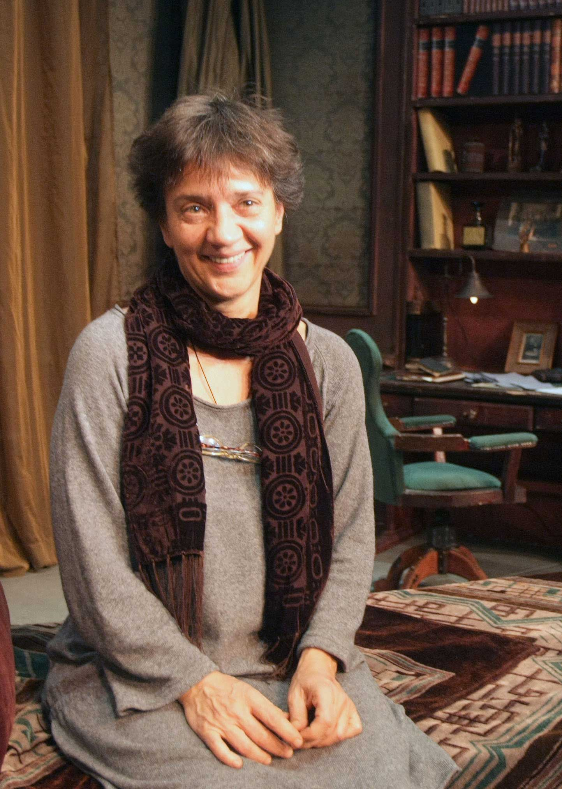

Direktor
IVANA DIMIĆ / Dramaturg i književnik
 Rođena 30. jula 1957. u Beogradu. Diplomirala Dramaturgiju na Fakultetu dramskih umetnosti u Beogradu 1982. Paralelno je apsolvirala na odseku Opšte književnosti sa teorijom književnosti na Filološkom fakultetu. Završila je postdiplomske studije na CEU (Evropski univerzitetski centar) u Nansiju (Francuska) na odseku Civilizacija 1984/85. Položila Stručni ispit za zaposlene u Organima Državne Uprave 2008. tzv. Državni ispit.
Od 1. januara 1978. je bila u statusu slobodnog umetnika u Udruženju dramskih umetnika Srbije. Od 1986. do 1996. je bila zaposlena u pozorištu Atelje 212 na mestu Prvog Dramaturga. Od 1996. se ponovo vratila u status slobodnog umetnika. Od januara do juna 200.1 je bila zamenik direktora drame u Narodnom pozorištu u Beogradu. Od novembra 2000. do 2002. je član Upravnog odbora pozorišta Boško Buha. Od marta 2001. član Srpskog književnog društva. Od decembra 2002. do 2004. je član Saveta BITEFa. Od juna 2004. do 2006. član Sveta FESTa. Od maja 2005. je Predsednik Upravnog odbora Beogradsko Dramskog pozorišta. Od januara 2005. stekla status Istaknutog Umetnika u Udruženju dramskih umetnika Srbije. Od 1. juna 2006. zaposlena na mestu Dramgurga u pozorištu Boško Buha. Od 24. maja 2007. do 28. avgusta 2008. Pomoćnik ministra kulture V.Brajovića u Vladi V. Koštunice, za stvaralaštvo, kulturnu industriju i kulturne odnose. Od avgusta 2008. ponovo zaposlena kao Dramaturg pozorišta Boško Buha. Od januara 2009. član žirija za dodelu Nagrade za pozorište Grada Beograda. Od decembra 2009. Predsednik Upravnog odbora biblioteke grada Beograda. Od 1. feb. 2010. do maja 2011. Direktor Drame Narodnog pozorišta u Beogradu. Od 1.maja 2011. dramaturg Narodnog pozorišta u Beogradu. V.D.Direktor Ateljea 212 od 19. novembra 2012.
Objavila pet knjiga proze, više drama, više dramatizacija i adaptacija za pozorište, tri serije za televiziju,više prevoda sa engleskog i francuskog jezika i bila dramaturg na većem broju pozorišnih predstava. Objavljene knjige proze: »Crna zelen« kratke priče (Prosveta,1995), »Mahorka, mastilo i muž« kratke priče (Prosveta, 1998.), »Uzimanje vremena« kratke priče, (Prosveta, 2001), »Ima li koga?« kratke priče, (Prosveta 2006.), »Popis imovine« kratke priče, (Profil, 2009.)
Antologije: »Mala kutija« antologija kratke priče od Mihajla Pantića, Antologija srpske pripovetke na engleskom »The man who ate death« priredio M. Pantić, Antologija »21 za 21« priredio Vasa Pavković, Agora, 2011, „Zemaljski dugovi“ zbirka pripovedaka o Andriću, 2012, Laguna.
Igrane drame: »Pred ogledalom« r. Z. Ratković, Atelje 212, 1986, »Pepeljuga« Malo pozorište D.Radović 1989, »Beli ugao«(objavljeno) časopis Književnost 1-2, 1998, »Golje« r. J. Radivojević, Teatar T, 2001, »Snežna bajka«, B. Buha, 2004, »Zmajovini pangalozi« B.Buha, 2007.
Dramatizacije: »Kabare«dramatizacija poezije M.Bećkovića za pozorište, izvedena 1983, »Vasilisa Prekrasna« dramatizacija bajke izvedena na radiju 1984, »Telefonske brigade« dramatizacija teksta B.Crnčevića za pozorište, izvedena l992. u pozorištu D.Radović, »Mamac« dramatizacija romana D.Albaharija, izvedena u Narodnom pozorištu u Beogradu,1998, Dramatizacije kratkih priča za dramski Program RTS: Kafke, Gogolja, Čehova, Harmsa, Remizova, Kalvina 2004, »Cigani lete u nebo«M.Gorkog, r. V. Lazić, Teatar T 2004, »Petar Pan«,M Bari, r. M. Karadžić, B.Buha, 2010.
Prevodi sa engleskog – drame: »Iza kulisa« M. Frejn, 1992, Atelje 212 režija Alisa Stojanović, »Master klas«T.Mek Neli,1996, Bitef t. režija Alisa Stojanović, »Kokice« B.Elton, 1998, Narodno p. režija Dušan Petrović »U traganju za prošlim vremenom« H.Pinter i Di Trevis, 2000, Narodno poz
(nije izvedeno), »Kad delfini odlete« N. Kauard 2002, Kruševačko pozorište, r. Lj. Draškić, »Džepovi puni kamenja« M.Džouns, 2003, Atelje 212, režija E. Kadić, »Gvozdeni život« Rona Munro, 2005. BDP, režija Ž.Tomić, »Rokenrol« Tom Stopard, 2006. BDP, »Buđenje proleća«,Vedekind/S.Sater mjuzikl, 2010. BDP, r. N. Bradić, »Godina magijskog mišljenja«, Džoan Didion, monodrama 2010.
Romani: »Prva damska detetktivska agencija« roman od A.Makol Smita, objavljen 2004. u samizdatu B92, »Žirafine suze« roman od A. Makol Smita, objavljen 2004 u samizdatu B92, »Umreti u Čikagu« roman od N. Tešić, Objavljen u Službenom glasniku, 2012. Prevod zajedno sa D.Babićem
Teorijski tekstovi: »Razvoj psihoanalize u Rusiji od 1919. do 1930« časopis Teorija, god 1981. (Prevod s francuskog)
»Koje su želje politički značajne« , B. Rasel, Mostovi 141-2, januar 2008. (Prevod s engleskog)
Prevodi sa francuskog – drame: »Rabagas« od V. Sradua,1987, za Atelje 212, nije izvedeno, »Detinjarije« od R. Kusa, 1996. Bitef t. režija D. Petrović, »Masakrarije« od E.Joneska, publikovano u »Celokupno delo Ežena Joneska«, Paidea, 1996, »Tri verzije života« od J. Reze, Atelje 212 režija Alisa Stojanović, 2001, Rasprava od Marivoa za Jugoslovensko dramsko pozorište, 2009, Čigra,Viktor Lanu, za Zvezdara Teatar, 2012 (Victor Lanoux »Le Tourniquet«)
Televizijska scenarija: »Pozorišni rečnik« serija scenarija od osam epizoda u režiji S.Božinovića emitovana na RTS 1989. (trajanje epizode je 30 minuta).
»Vukov video bukvar« serija scenarija od trideset epizoda u režiji M.Karadžića emitovana na TV Studio B 1992. (trajanje epizode je 30 minuta).
»Kuća za maštanje« – scenarija za desetominutne igrane priloge za emisiju na RTS u režiji M. Milojevića u trajanju od preko deset godina (od 1987- 1997), oko 300 epizoda, »Pozorište u kući« rimejk, 26 epizoda, za RTS, 2006-2007, »Moj rođak sa sela«, dramaturg, 13 epizoda, za RTS, 2007.
Dramaturg na predstavama (adaptacije/štrihovi): Audijencija i vernisaž, 1981. Atelje 212 režija Lj. Draškić, pisac V. Havel, Kosančićev venac 7, 1982. Atelje 212 režija Z. Ratković, pisac S.Selenić, Matrijalisti, 1982. Atelje 212 režija Lj. Draškić, pisac Čudić, Vojcek, 1982, Pivara, režija S. Kapić, pisac Bihner Ambasador,1982, Atelje 212 režija Lj. Draškić, pisac Mrožek, Marija se bori s anđelima,1984.Atelje 212 režija Lj. Draškić, pisac Kohout, Život i priključenija vojnika I. Čonkina 1984, Atelje 212, režija Z.Ratković, Čaplja, 1985, Atelje 212, r. D. Mijač Pisac Aksjonov, Sveti Georgije ubiva aždahu, 1986, Atelje 212, r. Lj. Draškić, pisac D.Kovačević, Siroti mali hrčki,1987. Atelje 212 režija A. Gavrilović, pisac Mihić, Strah za granicu,1987, Atelje 212 režija Eduard Miler, pisac T.Man, Boris Godunov, 1988, Atelje 212 režija Z.Ratković, pisac Puškin, adaptacija, Ne šetaj se gola, 1989, Atelje 212 režija Z. Ratković, pisac Fejdo Miloduh, 1989, Atelje 212 režija P. Teslić, pisac P.Šefer, Advokat Pjer Patlen, 1990, Atelje 212 režija Z. Dorić, pisac nepoznat, Staza divljači, 1991, Atelje 212 režija Alisa Stojanović, pisac Krec, Žabar, 1991, Atelje 212 režija Gorčin Stojanović, pisac Fazbinder, Filumena Marturano,1993, Atelje 212 režija Branko Pleša, pisac E.de Filipo, Škola za žene,1994, Atelje 212 režija Zoran Ratković, pisac Molijer, Moskva Petuški, 1995, Atelje 212 režija Predrag Bajčetić, pisac Jerofejev, Turneja, 1996, Atelje 212 režija Milan Karadžić, pisac G.Marković, Don Žuan, 1997, Kruševačko poz. režija M. Karadžić ,pisac Molijer, Ljubavi Džordža Vašingtona,1997. Atelje 212, r. Tatjana Mandić-Rigonat pisac M. Gavran, Pop Ćira i pop Spira, 1997, SNP režija M. Karadžić, pisac S.Sremac Suparnici, 1997, Beogradsko dramsko p. režija M. Karadžić, pisac Šeridan, Tartif, 1997, Narodno pozorište režija Laslo Babarci,pisac Molijer, Govorna mana, 1998, Narodno poz. režija M. Karadžić, pisac G.Marković, Ćelava pevačica, 1998.Kruševačko p. režija Jagoš Marković, pisac Jonesko Perišon, 1998, Kruševačko poz. režija M. Karadžić, pisac Labiš, Oliver Tvist, 1998, Boško Buha režija Nebojša Bradić, pisac Dikens, Pepo ili pobuna anđela, 1998, SNP režija Laslo Babarci, pisac A. Silađi, Cijanid u pet,1998, Narodno poz. režija Božidar Đurović, pisac Kohout, U cara Trojana kozje uši, 1999. poz. Boško Buha, r. M. Karadžić pisac Lj. Ršumović, Vladika Nikolaj, 1999, teatar Kult režija Nenad Ilić, originalni tekstovi, Samo vi ajte, 1999, Beogradsko dramsko poz., režija M. Karadžić, pisac M. Karadžić, Maksim Crnojević, 2000, Narodno poz. režija Nikita Milivojević, pisac L. Kostić, Zabavljač, 2000., Atelje 212 r.E.Kadić pisac F. Kusz Pijanista, 2000, Atelje 212, r.E.Kadić Pisac Bariko, Hasanaginica, 2001, Narodno pozorište režija Jagoš Marković, pisac Lj. Simović, Pandorina kutija , 2002, Beogradsko dramsko poz. pisac i režija Goran Marković, Ukroćena goropad, 2002, Niško narodno p. režija M. Karadžić, pisac Šekspir, Sudbina i komentari, 2002, Narodno poz. režija Alisa Stojanović, pisac Petković Skup, 2002, Jugoslovensko dramsko p. režija J.Marković, pisac Držić, adaptacija, Nenagrađeni ljubavni trud, 2002, Zetski dom, Cetinje, režija M. Karadžić, pisac Šekspir, Egzibicionista, 2003, Atelje 212 režija M. Karadžić, pisac D.Jovanović, Frederik,2003, BDP, r. M. Karadžić, pisac Šmit, Pogled u nebo, 2003, Zvezdara, r.Lj.Todorović, pisac D. Her, Pinokio, B. Buha, 2003. r. M. Karadžić pisac K. Kolodi, Villa Sachino, G. Markovića, BDP 2004. r. M. Karadžić, Oskar i mama Roz, BDP 2004, r. N.Bradić Pisac Šmit, Tre sorele, 2004. Zvezdara teatar r. M. Karadžić, pisac S. Koprivica, Snežana i sedam patuljaka, Lj.Ršumović B.Buha, 2005. r. M. Karadžić, Mala trilogija smrti 2005. BDP režija N.Bradić, pisac E. Jelinek, adaptacija Ukroćena goropad, Šekspir, B. Buha 2006. r. M. Karadžić, Alisa, L.Kerol, B.Buha, 2006. r.Marija Milenković adaptacija, Dva viteza iz Verone,Šekspir, B.Buha 2006. režija G.Šušljik, Transilvanija, D.Nikolić, 2006. BDP režija M. Karadžić, Otelo, Šekspir, 2006. B.Buha, r.Jovan Grujić, Bogojavljenska noć, Šekspir, 2006. B.Buha režija Bojana Lazić, Pepeljuga ,I. Bojović, 2006. B.Buha režija M. Karadžić Dekameron, Bokačo 2006. B.Buha, Krčmarica Mirandolina, Goldoni,
2006 .B.Buha, režija Jug Radivojević, Laka konjica ,Jančar, 2007. BDP, režija Milan Karadžić, Prevođenje, Brajan Fril, 2009 .JDP, režija Dejan Mijač, Mala sirena, Razumovska, 2009. B.Buha, režija Milan Karadžić, Zlatno tele, Iljif i Petrov, 2010. Narodno poz.režija G. Marković, Prizori egzekucije, H.Barker, 2010. Narodno poz. režija M. Manojlović, Misis Tolstoj, S.Kokovkin, 2011. Narodno poz. režija R.Milenković, Doktor D, G. Marković, 2012. BDP. režija G. Marković, Tajna Grete Garbo, Madlenijanum, 2012, režija Đurđa Tešić, Staklena menažerija, T. Vilijams 2012, Narodno poz. Režija R. Milenković, Henri VI,prvi deo, Šekspir, 2012. Narodno poz-Glob,brežija N.Milivojević, Iza kulisa, M.Frejn, 2012. B.Buha, režija Jug Radivojević, Građanin Plemić, Molijer, 2012, režija D. Mihajlović, poz.Kosovske Mitrovice (adaptacija), Ženski orkestar, Anuj, 2012. režija
Jug Radivojević, Narodno pozorište (adaptacija Dimić/Radivojević, songovi I.Dimić)
Nagrade:
Nagrada Tiba festivala za najbolji dramski tekst za »Zmajovine pangaloze«2011. Zlatni beočug za trajni doprinos kulturi
2012. Godišnja nagrada Narodnog pozorišta u Beogradu za predstave Henri VI i Ženski orkestar